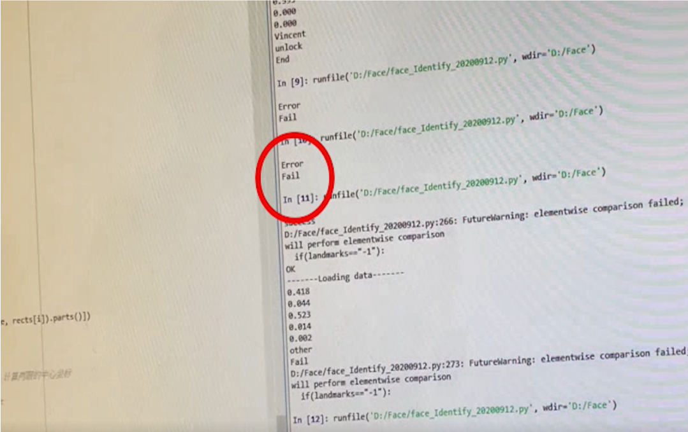

組員:王騰緯、陳柏榮、邱奕融、許家豪
指導老師:李志仁教授 組別:B01
第二部分:人臉辨識
圖 12人臉辨識門禁系統流程圖
已經完成的活體辨識部分，第一次使用的方法是利用眼、嘴變化計算部位，實現表情來預防不為活體問題。如果是真人顯示"people"，否則皆為顯示"picture"。
圖13 辨識為圖片
使用前述的方法發現，人臉辨識時需要用表情解鎖並不是很自然，如果變化有很大有機會辨識不為真人，接下來第二種方式，利用臉部點位變化讓人臉辨識更加自然活用。

最後的成果展現，把攝像頭、門鎖與Arduino經過美化與整線讓整體感覺更像一道門。
圖18 人臉辨識門禁系統
如果連活體辨識部分都沒有通過，會直接顯示Error並一樣不能解鎖。
圖22 人臉解鎖失敗電腦畫面(活體辨識)